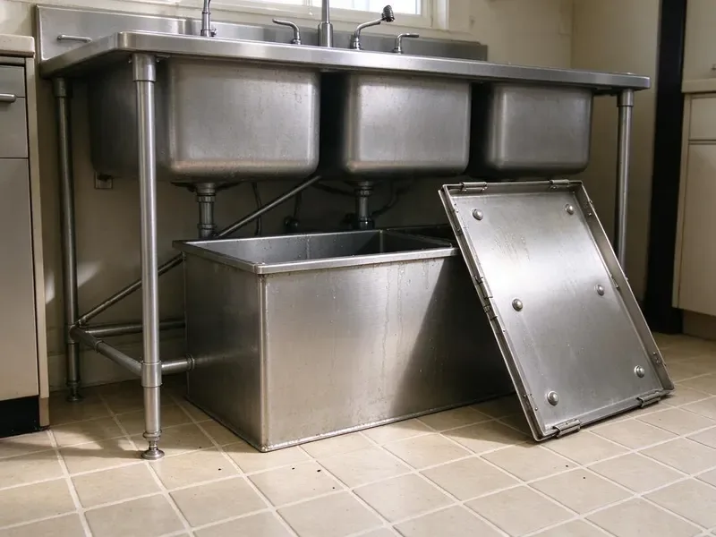

Insinkerator Installation in Benton, AR
First disposal in an older Benton, AR kitchen? We add the flange, the power and the drain connection in one visit.
- Badger and Evolution on the Truck
- Next-Day Disposal Swaps
- Licensed, Insured Plumbers
- Old Unit Haul-Away Included

Ready for a New InSinkErator in Benton, AR?
Our plumbers stock common Badger and Evolution models so most installs finish in one visit.
InSinkErator Installation in Benton, AR
DGR Plumbing does the swap start to finish. We pull the old unit and take it with us. We set fresh putty under the flange, lock the mounting ring and line the discharge tube up with the trap so no joint is under strain. The old putty and debris come out of the cabinet with us.
Work we handle every week:
- Dishwasher drain tested with the unit running
- Anti-vibration mounting
- Grounded electrical connections

Additional Kitchen Plumbing Services in Benton, AR
Our kitchen plumbing services in Benton, AR cover sinks, disposals, dishwashers, and grease traps so your kitchen keeps running without backups or leaks.


Customers
Why Choose DGR Plumbing for Insinkerator Installation in Benton, AR?
Horsepower is where people overspend. For a two-person kitchen, a Badger 5 is usually enough. A large family that cooks every night is better served by a 3/4 HP Evolution, since it grinds finer and stays quieter on fibrous scraps.
- Genuine Units, We install genuine InSinkErator units with the maker's full warranty intact.
- Clean Work, We put down a mat and take the old unit and the debris with us.
- Tested Before Leaving, We run water, grind a test load and check every joint for leaks.
Citywide Coverage
Cast iron drains in older neighborhoods and PVC in newer subdivisions are both routine for us across Benton. Cast iron needs care. A corroded cast iron trap arm can crack when you tighten a new fitting onto it, so we inspect it first and quote a short section of replacement pipe if it looks thin.
Experienced Team
The crew works with the full InSinkErator lineup, including the Pro series. Compact cabinets get the right model. The Evolution Excel needs the most clearance under the bowl, and if the measurement comes up short, they will tell you before the box is opened so you can pick a smaller unit.
Safety-First Approach
Switches and air buttons go where water cannot reach live wiring. An air switch exists for exactly that. With a wall switch, we check that the box is properly covered and the cord kit is rated for the unit, and with an air switch the only thing on the counter is a hollow button and an air tube.
Trusted Certified Benton Plumbing Services Professionals
At DGR Plumbing, we take pride in licensed, certified plumbing services throughout Benton, AR. Those papers on the wall mean something. Every repair, install and maintenance visit follows strict safety and quality rules, and the plumbers doing the work carry recognized industry credentials.
Call Us Now PHCC Plumbing Contractor Recognition
PHCC Plumbing Contractor Recognition Better Business Bureau (BBB) Accreditation
Better Business Bureau (BBB) Accreditation Angi Certified Pro
Angi Certified Pro ISO 9001 Quality Management Certification
ISO 9001 Quality Management CertificationGarbage Disposal Installation Services in Benton, AR
Batch Feed vs Continuous Feed in Benton
Continuous feed is the type most kitchens have. Flip the switch and it runs until you flip it off. A batch feed unit needs its stopper locked in to run, keeping hands out of the chamber, and it needs no wall switch. We wire each one to match.

Badger Disposal Install in Benton
Most replacement disposals in local kitchens are a Badger. A 1/3 to 3/4 HP Badger handles normal scraps and fits almost any sink base cabinet. The unit hangs on its quick-lock mount, the discharge tube goes on, a cord kit gets added if needed and we finish with a cold-water test grind. About an hour, usually.
Badger Replacement for Benton Homes
Builder-grade kitchens almost always started with a Badger, and a worn one usually gets replaced with another. We pull the old unit first. If the upper mount is the same quick-lock design and is not pitted, we reuse it, which saves time and keeps the seal surfaces that already match your sink. Then the new Badger hangs, locks and gets tested.
Evolution Disposal Upgrades in Benton, AR
Stringy food is where these units earn their price. Corn husks and celery leaves jam a light unit. A Compact or Excel grinds in stages with more torque, so fibrous scraps get cut down instead of binding the impellers and tripping the reset. We check cabinet clearance first.
Standard InSinkErator Installation in Benton
A standard install goes into a sink that already has a drain and power. We take the old disposal down, scrape the old putty off the flange and set a new flange with fresh putty. Then the mount ring goes on. The unit hangs on the ring, locks with a quarter turn, and the discharge tube meets the trap on a new slip-joint washer. Power comes from a cord kit or the existing hardwire, checked for ground before the breaker goes back on.
Disposal Replacement and Haul-Away in Benton, AR
Old disposals are heavy and awkward to get rid of. We take them with us. The old cord, any replaced mount ring and the rusty slip nuts go too, so you are not stuck with a bag of parts on trash day. Most replacements finish in one visit.
First-Time Disposal Installation in Benton
Kitchens that never had a disposal need some rework. First, the sink gets a disposal flange. The tailpiece and trap have to be reworked, and the cabinet needs a switched outlet, which means an electrician if there is no power under the sink already. Drain slope to the stack gets checked as well.

Badger Series Installation in Benton, AR
The Badger line runs from the 1/3 HP Badger 1 up to the Badger 5XP. All of them use the same quick-lock mount. Because of that, a Badger-for-Badger swap can take under an hour, and the flange often stays if it is still clean. Badgers ship without a cord, so we bring the cord kit.
InSinkErator Installation Near Me in Benton, AR
Our Benton crew does disposal work most days of the week. Swaps are routine for them. Doing it often is what keeps the small misses away, such as a cross-threaded slip nut or a forgotten knockout, the kind that bring a callback. Each job ends with a water test.
Searching for disposal installation near you in Benton, AR? Our plumbers work out of local trucks, not a call center two time zones away. Most mornings we have an opening the same day, and the truck carries the common InSinkErator models so we are not making you wait three days for a special order. Larger Evolution units may need a day.
DGR Plumbing at a Glance
- Fully licensed plumbing team covering Benton, AR
- Same-day appointments and 24/7 emergency response
- Upfront, flat-rate pricing before work begins
- 4.8-star rated by 871+ Arkansas customers
Benton Map
Benton Information
- Population
- 37,558
- Area codes
- Local
- Service area
- Benton and towns within a 40 mile drive
- Nearby
- Little Rock, North Little Rock, Hot Springs, Sherwood
Older drain lines take a beating from ground food waste, so we check the trap arm and slope before mounting. Expansive clay soils across much of Arkansas swell and shrink with rainfall, which can shift foundations and crack buried sewer lines.
Expert Services
Call DGR Plumbing for reliable plumbing work done by licensed pros in Benton, AR.
Our Specialized Plumbing Services in Benton, AR
At DGR Plumbing, you get every kind of plumbing service from one company across Benton, AR. From leak detection to full system installs, our team works fast and charges fair prices on homes and commercial properties alike. Explore our core services below:


What an InSinkErator Install Looks Like in Benton, AR
Our InSinkErator install process is short and stays inside the cabinet.
Request a Quote
Call (501) 251-9708 and tell us about your sink and current disposal. We will recommend a model and give you a clear price before we arrive.
Mount and Connect
Our plumber removes the old unit, sets the new flange and mount, and connects the drain and dishwasher lines. Power goes on through a cord kit or a hardwire connection.
Test and Clean Up
We run water, grind a test load and watch each joint for drips. Then we clean the cabinet, haul the old unit off and show you the reset button and hex key.
Frequently Asked Questions About Insinkerator Installation in Benton
Most installs in Benton, AR come to $200 to $600 with labor and basic materials. The disposal itself is separate. A residential unit costs about $100 to $400 by horsepower and grind stages, listed apart from labor on the written quote.
Safe enough if the breaker is off and you know how to land a ground wire. Most DIY trouble is not about safety. A forgotten knockout or a dry flange shows up later as a dishwasher that will not drain or a drip into the cabinet.
Not for a simple replacement, in most places. New circuits are the usual exception. Significant drain changes can also need a permit under local plumbing code, and we will tell you when your job falls into that group before we schedule it.
One to two hours for most jobs. A straight swap on the same mount can be faster. Expect up to three hours if the job needs new wiring or a lowered trap arm, which we flag in the quote.
Rural wells in Arkansas often carry iron, sediment, or a sulfur odor, which can stain fixtures and clog aerators and water heaters. Hard water leaves scale on the grind ring and in the drain tailpiece over time. The unit gets louder. Running cold water during every use and grinding a few ice cubes now and then helps, and Evolution models with stainless grind parts hold up better against scale than the base units do.
Our workmanship warranty covers the install itself, meaning the flange seal and every connection we make. The unit has its own warranty. Coverage from the maker runs about two to ten years by model, and we write down both so you know who handles what.
Empty the cabinet under the sink. The trash can and the cleaning bottles both need to come out. A unit you bought yourself can stay boxed nearby, and the tech will confirm the model and mount before removing the old one.
It will, with the right model and some care. The Evolution Septic Assist adds enzymes during each grind. That helps food break down before the tank, but scraping plates and keeping grease out still matters.
Hear From Customers Who Hired Our Plumbing Experts

Robert G.
The camera showed a full break in our clay sewer line near the street. DGR Plumbing replaced it with a trenchless pipe burst, so the only digging was two small pits in the yard. They let us watch the footage before and after.
Sewer Line Replacement · Benton, AR
Angela D.
Our sump pump quit during a storm and the water was an inch from the basement carpet. DGR Plumbing put in a new pump with a battery backup that same evening. We have had two heavy rains since. It kicked on both times.
Sump Pump · North Little Rock, AR
Laura S.
Our 40 gallon tank started leaking from the bottom after thirteen years. The tech hauled the old one out, set a new unit with a fresh expansion tank, and had hot water running in about four hours. He took the old tank with him too.
Water Heater Replacement · Pine Bluff, ARDiane F.
My kitchen faucet had dripped for months and I finally got tired of hearing it at night. DGR Plumbing came out the next morning, replaced the cartridge and the O rings, and tightened a loose base that was letting water under the sink.
Faucet Repair · Conway, AR
Rachel N.
Hard water was leaving white crust on every faucet and our dishwasher was struggling. The tech tested the water, recommended a softener sized for a family of five, and installed it with a bypass valve in one afternoon. The spots on our glasses are gone.
Water Softener · Little Rock, ARJessica T.
We were adding a gas range in a kitchen remodel and needed a new line run from the meter. The plumber pulled the permit, ran the pipe through the crawl space, and had it inspected and approved within the week.
Gas Line Repair · North Little Rock, AR